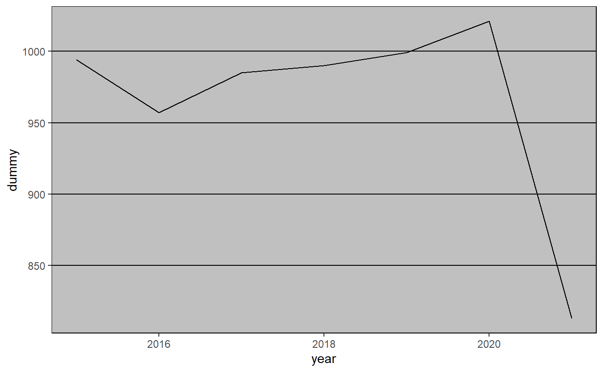
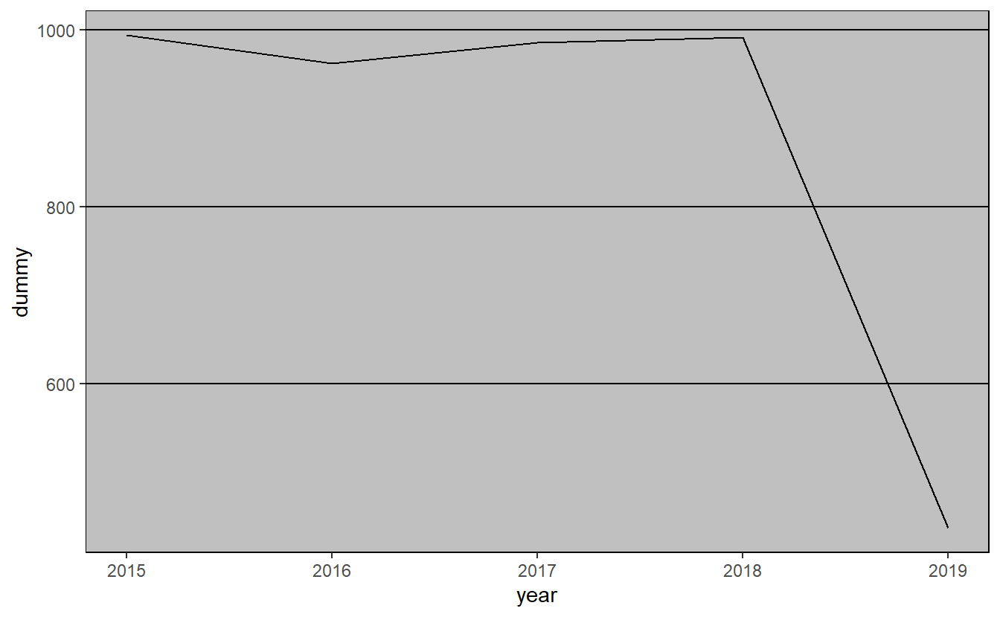

15 More graphing with ggplot2
For this chapter you’ll need the following file, which is available for download here: fatal-police-shootings-data.csv.
In this lesson we will continue to explore graphing using ggplot2. The data we will use is microdata on officer-involved shootings that result in a death in the United States since January 1st, 2015. This data has been compiled and released by the Washington Post so it will be a useful exercise in exploring data from non-government sources. This data is useful for our purposes as it has a number of variables related to the person who was shot, allowing us to practice making many types of graphs. Each row of data is a different person who was shot and killed by the police, and each column gives us information about the individual or the shooting, such as their age, whether they carried any weapon, and the shooting location.
To explore the data on the Washington Post’s website, see here. To examine their methodology, see here.
The data initially comes as a .csv file so we’ll use the read_csv() function from the readr package.
library(readr)
shootings <- read_csv("data/fatal-police-shootings-data.csv")Since read_csv() reads files into a tibble object, we’ll turn it into a data.frame so head() shows every single column.
shootings <- as.data.frame(shootings)15.1 Exploring data
Now that we have the data read in, let’s look at it.
ncol(shootings)
#> [1] 14
nrow(shootings)
#> [1] 4371The data has 14 variables and covers 4,371 shootings. Let’s check out some of the variables, first using head() then using summary() and table().
head(shootings)
#> id name date manner_of_death armed age gender race
#> 1 3 Tim Elliot 2015-01-02 shot gun 53 M A
#> 2 4 Lewis Lee Lembke 2015-01-02 shot gun 47 M W
#> 3 5 John Paul Quintero 2015-01-03 shot and Tasered unarmed 23 M H
#> 4 8 Matthew Hoffman 2015-01-04 shot toy weapon 32 M W
#> 5 9 Michael Rodriguez 2015-01-04 shot nail gun 39 M H
#> 6 11 Kenneth Joe Brown 2015-01-04 shot gun 18 M W
#> city state signs_of_mental_illness threat_level flee
#> 1 Shelton WA TRUE attack Not fleeing
#> 2 Aloha OR FALSE attack Not fleeing
#> 3 Wichita KS FALSE other Not fleeing
#> 4 San Francisco CA TRUE attack Not fleeing
#> 5 Evans CO FALSE attack Not fleeing
#> 6 Guthrie OK FALSE attack Not fleeing
#> body_camera
#> 1 FALSE
#> 2 FALSE
#> 3 FALSE
#> 4 FALSE
#> 5 FALSE
#> 6 FALSEEach row is a single shooting and it includes variables such as the victim’s name, the date of the shooting, demographic information about that person, the city and state where the shooting occurred, and some information about the incident. It is clear from these first 6 rows that most variables are categorical so we can’t use summary() on them. Let’s use summary() on the date and age columns and then use table() for the rest.
summary(shootings$date)
#> Min. 1st Qu. Median Mean 3rd Qu. Max.
#> "2015-01-02" "2016-02-07" "2017-03-16" "2017-03-18" "2018-04-11" "2019-06-25"
summary(shootings$age)
#> Min. 1st Qu. Median Mean 3rd Qu. Max. NA's
#> 6.00 27.00 35.00 36.84 45.00 91.00 182From this we can see that the data is from early January through mid-2019.18 From the age column we can see that the average age is about 37 with most people around that range. Now we can use table() to see how often each value appears in each variable. We don’t want to do this for city or name as there would be too many values, but it will work for the other columns. Let’s start with the “manner_of_death” column.
table(shootings$manner_of_death)
#>
#> shot shot and Tasered
#> 4146 225To turn these counts into percentages we can divide the results by the number of rows in our data and multiply by 100.
table(shootings$manner_of_death) / nrow(shootings) * 100
#>
#> shot shot and Tasered
#> 94.852437 5.147563Now it is clear to see that in about 95% of shootings, officers used a gun and in 5% of shootings they also used a Taser. As this is data on officer shooting deaths, this is unsurprising. Let’s take a look at whether the victim was armed.
table(shootings$armed) / nrow(shootings) * 100
#>
#> air conditioner ax
#> 0.02287806 0.48043926
#> barstool baseball bat
#> 0.02287806 0.27453672
#> baseball bat and bottle baseball bat and fireplace poker
#> 0.02287806 0.02287806
#> baton bayonet
#> 0.09151224 0.02287806
#> BB gun bean-bag gun
#> 0.06863418 0.02287806
#> beer bottle blunt object
#> 0.06863418 0.11439030
#> bow and arrow box cutter
#> 0.02287806 0.22878060
#> brick carjack
#> 0.04575612 0.02287806
#> chain chain saw
#> 0.04575612 0.04575612
#> chainsaw chair
#> 0.02287806 0.04575612
#> claimed to be armed contractor's level
#> 0.02287806 0.02287806
#> cordless drill crossbow
#> 0.02287806 0.20590254
#> crowbar fireworks
#> 0.06863418 0.02287806
#> flagpole flashlight
#> 0.02287806 0.02287806
#> garden tool glass shard
#> 0.02287806 0.06863418
#> gun gun and car
#> 55.43353924 0.11439030
#> gun and knife gun and sword
#> 0.34317090 0.02287806
#> gun and vehicle guns and explosives
#> 0.04575612 0.06863418
#> hammer hand torch
#> 0.22878060 0.02287806
#> hatchet hatchet and gun
#> 0.18302448 0.04575612
#> incendiary device knife
#> 0.04575612 14.96225120
#> lawn mower blade machete
#> 0.04575612 0.86936628
#> machete and gun meat cleaver
#> 0.02287806 0.06863418
#> metal hand tool metal object
#> 0.02287806 0.09151224
#> metal pipe metal pole
#> 0.25165866 0.04575612
#> metal rake metal stick
#> 0.02287806 0.06863418
#> motorcycle nail gun
#> 0.02287806 0.02287806
#> oar pellet gun
#> 0.02287806 0.02287806
#> pen pepper spray
#> 0.02287806 0.02287806
#> pick-axe piece of wood
#> 0.06863418 0.06863418
#> pipe pitchfork
#> 0.13726836 0.04575612
#> pole pole and knife
#> 0.04575612 0.04575612
#> rock samurai sword
#> 0.09151224 0.02287806
#> scissors screwdriver
#> 0.06863418 0.18302448
#> sharp object shovel
#> 0.11439030 0.06863418
#> spear stapler
#> 0.02287806 0.02287806
#> straight edge razor sword
#> 0.06863418 0.34317090
#> Taser tire iron
#> 0.41180508 0.02287806
#> toy weapon unarmed
#> 3.54609929 6.36010066
#> undetermined unknown weapon
#> 4.30107527 1.25829330
#> vehicle vehicle and gun
#> 1.57858614 0.02287806
#> walking stick wrench
#> 0.02287806 0.02287806This is fairly hard to interpret as it is sorted alphabetically when we’d prefer it to be sorted by most common weapon. It also doesn’t round the numbers so there are many numbers past the decimal point shown. Let’s solve these two issues using sort() and round(). We could just wrap our initial code inside each of these functions but to avoid making too complicated code, we save the results in a vector called “temp” and incrementally use sort() and round() on that. We’ll set the parameter decreasing to TRUE in the sort() function so that it is in descending order of how common each value is. And we’ll round to two decimal places by setting the parameter digits to 2 in round().
temp <- table(shootings$armed) / nrow(shootings) * 100
temp <- sort(temp, decreasing = TRUE)
temp <- round(temp, digits = 2)
temp
#>
#> gun knife
#> 55.43 14.96
#> unarmed undetermined
#> 6.36 4.30
#> toy weapon vehicle
#> 3.55 1.58
#> unknown weapon machete
#> 1.26 0.87
#> ax Taser
#> 0.48 0.41
#> gun and knife sword
#> 0.34 0.34
#> baseball bat metal pipe
#> 0.27 0.25
#> box cutter hammer
#> 0.23 0.23
#> crossbow hatchet
#> 0.21 0.18
#> screwdriver pipe
#> 0.18 0.14
#> blunt object gun and car
#> 0.11 0.11
#> sharp object baton
#> 0.11 0.09
#> metal object rock
#> 0.09 0.09
#> BB gun beer bottle
#> 0.07 0.07
#> crowbar glass shard
#> 0.07 0.07
#> guns and explosives meat cleaver
#> 0.07 0.07
#> metal stick pick-axe
#> 0.07 0.07
#> piece of wood scissors
#> 0.07 0.07
#> shovel straight edge razor
#> 0.07 0.07
#> brick chain
#> 0.05 0.05
#> chain saw chair
#> 0.05 0.05
#> gun and vehicle hatchet and gun
#> 0.05 0.05
#> incendiary device lawn mower blade
#> 0.05 0.05
#> metal pole pitchfork
#> 0.05 0.05
#> pole pole and knife
#> 0.05 0.05
#> air conditioner barstool
#> 0.02 0.02
#> baseball bat and bottle baseball bat and fireplace poker
#> 0.02 0.02
#> bayonet bean-bag gun
#> 0.02 0.02
#> bow and arrow carjack
#> 0.02 0.02
#> chainsaw claimed to be armed
#> 0.02 0.02
#> contractor's level cordless drill
#> 0.02 0.02
#> fireworks flagpole
#> 0.02 0.02
#> flashlight garden tool
#> 0.02 0.02
#> gun and sword hand torch
#> 0.02 0.02
#> machete and gun metal hand tool
#> 0.02 0.02
#> metal rake motorcycle
#> 0.02 0.02
#> nail gun oar
#> 0.02 0.02
#> pellet gun pen
#> 0.02 0.02
#> pepper spray samurai sword
#> 0.02 0.02
#> spear stapler
#> 0.02 0.02
#> tire iron vehicle and gun
#> 0.02 0.02
#> walking stick wrench
#> 0.02 0.02Now it is a little easier to interpret. In over half of the cases the victim was carrying a gun. 15% of the time they had a knife. And 6% of the time they were unarmed. In 4% of cases there is no data on any weapon. That leaves about 20% of cases where one of the many rare weapons were used, including some that overlap with one of the more common categories.
Think about how you’d graph this data. There are 85 unique values in this column though fewer than ten of them are common enough to appear more than 1% of the time. Should we graph all of them? No, that would overwhelm any graph. For a useful graph we would need to combine many of these into a single category - possibly called “other weapons.” And how do we deal with values where they could meet multiple larger categories? There is not always a clear answer for these types of questions. It depends on what data you’re interested in, the goal of the graph, the target audience, and personal preference.
Let’s keep exploring the data by looking at gender and race.
table(shootings$gender) / nrow(shootings) * 100
#>
#> F M
#> 4.667124 95.218485Nearly all of the shootings are of a man. Given that we saw most shootings involved a person with a weapon and that most violent crimes are committed by men, this shouldn’t be too surprising.
temp <- table(shootings$race) / nrow(shootings) * 100
temp <- sort(temp)
temp <- round(temp, digits = 2)
temp
#>
#> O N A H B W
#> 0.87 1.46 1.62 16.45 22.90 44.89White people are the largest race group that is killed by police, followed by Black people and Hispanic people. In fact, there are about twice as many White people killed than Black people killed, and about 2.5 times as many White people killed than Hispanic people killed. Does this mean that the oft-repeated claim that Black people are killed at disproportionate rates is wrong? No. This data simply shows the number of people killed; it doesn’t give any indication on rates of death per group. You’d need to merge it with Census data to get population to determine a rate per race group. And even that would be insufficient since people are, for example, stopped by police at different rates.
This data provides a lot of information on people killed by the police, but even so it is insufficient to answer many of the questions on that topic. It’s important to understand the data not only to be able to answer questions about it, but to know what questions you can’t answer - and you’ll find when using criminology data that there are a lot of questions that you can’t answer.19
One annoying thing with the gender and race variables is that they don’t spell out the name. Instead of “Female,” for example, it has “F.” For our graphs we want to spell out the words so it is clear to viewers. We’ll fix this issue, and the issue of having many weapon categories, as we graph each variable.
15.2 Graphing a single numeric variable
We’ve spent some time looking at the data so now we’re ready to make the graphs. We need to load the ggplot2 package if we haven’t done so already this session (i.e. since you last closed RStudio).
library(ggplot2)As a reminder, the benefit of using ggplot() is that we can start with a simple plot and build our way up to more complicated graphs. We’ll start here by building some graphs to depict a numeric variable - in this case the “age” column. We start every ggplot() the same, by inserting the data set first and then put our x and y variables inside of the aes() parameter. In this case we’re only going to be plotting an x variable so we don’t need to write anything for y.
ggplot(shootings, aes(x = age)) Running the above code returns a blank graph since we haven’t told
Running the above code returns a blank graph since we haven’t told ggplot() what type of graph we want yet. Below are a few different types of ways to display a single numeric variable. They’re essentially all variations of each other and show the data at different levels of precision. It’s hard to say which is best - you’ll need to use your best judgment and consider your audience.
15.2.1 Histogram
The histogram is a very common type of graph for a single numeric variable. Histograms group a numeric variable into categories and then plot them, with the heights of each bar indicating how common the group is. We can make a histogram by adding geom_histogram() to the ggplot(). The results will print out the text “Warning: Removed 182 rows containing non-finite values (stat_bin).” which just means that 182 rows in our data have NA for age, and are excluded from the graph.
ggplot(shootings, aes(x = age)) +
geom_histogram()
#> `stat_bin()` using `bins = 30`. Pick better value with `binwidth`.
The x-axis is ages with each bar being a group of certain ages, and the y-axis is how many people are in each group. The grouping is done automatically and we can alter it by changing the bin parameter in geom_histogram(). By default this parameter is set to 30 but we can make each group smaller (have fewer ages per group) by increasing it from 30 or make each group larger by decreasing it.
ggplot(shootings, aes(x = age)) +
geom_histogram(bins = 15)
ggplot(shootings, aes(x = age)) +
geom_histogram(bins = 45)
Note that while the overall trend (of most deaths being around age 25) doesn’t change when we alter bin, the data gets more or less precise. Having fewer bins means fewer, but larger, bars which can obscure trends that more, smaller, bars would show. But having too many bars may make you focus on minor variations that could occur randomly and take away attention from the overall trend. I prefer to err on the side of more precise graphs (more, smaller bars) but be careful over-interpreting data from small groups.
These graphs show the y-axis as the number of people in each bar. If we want to show proportions instead, we can add in a parameter for y in the aes() of the geom_histogram(). We add in y = (..count..)/sum(..count..)) which automatically converts the counts to proportions. The (..count..)/sum(..count..)) stuff is just taking each group and dividing it from the sum of all groups. You could, of course, do this yourself before making the graph, but it’s an easy helper. If you do this, make sure to relabel the y-axis so you don’t accidentally call the proportions a count.
ggplot(shootings, aes(x = age)) +
geom_histogram(aes(y = (..count..)/sum(..count..)))
#> `stat_bin()` using `bins = 30`. Pick better value with `binwidth`.
15.2.2 Density plot
Density plots are essentially smoothed versions of histograms. They’re especially useful for numeric variables which are not integers (integers are whole numbers). They’re also useful when you want to be more precise than a histogram as they are - to simplify - histograms where each bar is very narrow. Note that the y-axis of a density plot is automatically labeled “density” and has very small numbers. Interpreting the y-axis is fairly hard to explain to someone not familiar with statistics so I’d caution against using this graph unless your audience is already familiar with it.
To interpret these kinds of graphs, I recommend looking for trends rather than trying to identify specific points. For example, in the below graph we can see that shootings rise rapidly starting around age 10, peak at around age 30 (if we were presenting this graph to other people we’d probably want more ages shown on the x-axis), and then steadily decline until about age 80 where it’s nearly flat.
ggplot(shootings, aes(x = age)) +
geom_density()
15.2.3 Count graph
A count graph is essentially a histogram with a bar for every value in the numeric variable - like a less-smooth density plot. Note that this won’t work well if you have too many unique values so I’d strongly recommend rounding the data to the nearest whole number first if you don’t already have an integer. Our age variable is already rounded so we don’t need to do that. To make a count graph, we add stat_count() to the ggplot().
ggplot(shootings, aes(x = age)) +
stat_count() Now we have a single bar for every age in the data. Like the histogram, the y-axis shows the number of people that are that age. And like the histogram, we can change this from number of people to proportion of people using the exact same code.
Now we have a single bar for every age in the data. Like the histogram, the y-axis shows the number of people that are that age. And like the histogram, we can change this from number of people to proportion of people using the exact same code.
ggplot(shootings, aes(x = age)) +
stat_count(aes(y = (..count..)/sum(..count..)))
15.3 Graphing a categorical variable
15.3.1 Bar graph
To make this barplot we’ll set the x-axis variable to our “race” column and add geom_bar() to the end.
ggplot(shootings, aes(x = race)) +
geom_bar() This gives us a barplot in alphabetical order. In most cases we want the data sorted by frequency, so we can easily see what value is the most common, second most common, etc. There are a few ways to do this but we’ll do this by turning the “race” variable into a factor and ordering it by frequency. We can do that using the
This gives us a barplot in alphabetical order. In most cases we want the data sorted by frequency, so we can easily see what value is the most common, second most common, etc. There are a few ways to do this but we’ll do this by turning the “race” variable into a factor and ordering it by frequency. We can do that using the factor() function. The first input will be the “race” variable and then we will need to set the levels parameter to a vector of values sorted by frequency. An easy way to know how often values are in a column is to use the table() function on that column, such as below.
table(shootings$race)
#>
#> A B H N O W
#> 71 1001 719 64 38 1962It’s still alphabetical so let’s wrap that in a sort() function.
sort(table(shootings$race))
#>
#> O N A H B W
#> 38 64 71 719 1001 1962It’s sorted from smallest to largest. We usually want to graph from largest to smallest so let’s set the parameter decreasing in sort() to TRUE.
sort(table(shootings$race), decreasing = TRUE)
#>
#> W B H A N O
#> 1962 1001 719 71 64 38Now, we only need the names of each value, not how often they occur. So we can against wrap this whole thing in names() to get just the names.
names(sort(table(shootings$race), decreasing = TRUE))
#> [1] "W" "B" "H" "A" "N" "O"If we tie it all together, we can make the “race” column into a factor variable.
shootings$race <- factor(shootings$race,
levels = names(sort(table(shootings$race),
decreasing = TRUE)))Now let’s try that barplot again.
ggplot(shootings, aes(x = race)) +
geom_bar() 
It works! Note that all the values that are missing in our data are still reported in the barplot under a column called “NA.” This is not sorted properly since there are more NA values than three of the other values but NA is still at the far right of the graph. We can change this if we want to make all the NA values an actual character type and call it something like “Unknown.” But this way it does draw attention to how many values are missing from this column. Like most things in graphing, this is a personal choice as to what to do.
For bar graphs it is often useful to flip the graph so each value is a row in the graph rather than a column. This also makes it much easier to read the value name. If the value names are long, it’ll shrink the graph to accommodate the name. This is usually a sign that you should try to shorten the name to avoid reducing the size of the graph.
ggplot(shootings, aes(x = race)) +
geom_bar() +
coord_flip() 
Since it’s flipped, now it’s sorted from smallest to largest. So we’ll need to change the factor() code to fix that by making the decreasing parameter in sort() FALSE.
shootings$race <- factor(shootings$race,
levels = names(sort(table(shootings$race),
decreasing = FALSE)))
ggplot(shootings, aes(x = race)) +
geom_bar() +
coord_flip() 
The NA value is now at the top, which looks fairly bad. Let’s change all NA values to the string “Unknown.” And while we’re at it, let’s change all the abbreviated race values to actual names. We can get all the NA values by using is.na(shootings$race) and using a conditional statement to get all rows that meet that condition, then assign them the value “Unknown.” Instead of trying to subset a factor variable to change the values, we should convert it back to a character type first using as.character(), and then convert it to a factor again once we’re done.
shootings$race <- as.character(shootings$race)
shootings$race[is.na(shootings$race)] <- "Unknown"Now we can use conditional statements to change all the race letters to names. It’s not clear what race “O” and “N” are so I checked the Washington Post’s GitHub page which explains what they mean. Instead of is.na() we’ll use shootings$race == "" where we put the letter inside of the quotes.
shootings$race[shootings$race == "O"] <- "Other"
shootings$race[shootings$race == "N"] <- "Native American"
shootings$race[shootings$race == "A"] <- "Asian"
shootings$race[shootings$race == "H"] <- "Hispanic"
shootings$race[shootings$race == "B"] <- "Black"
shootings$race[shootings$race == "W"] <- "White"Now let’s see how our graph looks. We’ll need to rerun the factor() code since now all of the values are changed.
shootings$race <- factor(shootings$race,
levels = names(sort(table(shootings$race),
decreasing = FALSE)))
ggplot(shootings, aes(x = race)) +
geom_bar() +
coord_flip() 
As earlier, we can show proportion instead of count by adding y = (..count..)/sum(..count..) to the aes() in geom_bar().
ggplot(shootings, aes(x = race)) +
geom_bar(aes(y = (..count..)/sum(..count..))) +
coord_flip() 
15.4 Graphing data over time
We went over time-series graphs in Chapter 14 but it’s such an important topic we’ll cover it again. A lot of criminology research is seeing if a policy had an effect, which means we generally want to compare an outcome over time (and compare the treated group to a similar untreated group). To graph that we look at an outcome - in this case numbers of killings - over time. In our case we aren’t evaluating any policy, just seeing if the number of police killings change over time.
We’ll need to make a variable to indicate that the row is for one shooting. We can call this “dummy” and assign it a value of 1. Then we can make the ggplot() and set this “dummy” column to the y-axis value and set our date variable “date” to the x-axis (the time variable is always on the x-axis). Then we’ll set the type of plot to geom_line() so we have a line graph showing killings over time.
shootings$dummy <- 1
ggplot(shootings, aes(x = date,
y = dummy)) +
geom_line() This graph is clearly wrong. Why? Well, our y-axis variable is always 1 so there’s no variation to plot. Every single value, even if there are more than one shooting per day, is on the 1 line on the y-axis. And the fact that we have multiple killings per day is an issue because we only want a single line in our graph. We’ll need to aggregate our data to some time period (e.g. day, month, year) so that we have one row per time-period and know how many people were killed in that period. We’ll start with yearly data and then move to monthly data. Since we’re going to be dealing with dates, let’s use the
This graph is clearly wrong. Why? Well, our y-axis variable is always 1 so there’s no variation to plot. Every single value, even if there are more than one shooting per day, is on the 1 line on the y-axis. And the fact that we have multiple killings per day is an issue because we only want a single line in our graph. We’ll need to aggregate our data to some time period (e.g. day, month, year) so that we have one row per time-period and know how many people were killed in that period. We’ll start with yearly data and then move to monthly data. Since we’re going to be dealing with dates, let’s use the lubridate() package that is well-suited for this task.
install.packages("lubridate")library(lubridate)
#>
#> Attaching package: 'lubridate'
#> The following objects are masked from 'package:base':
#>
#> date, intersect, setdiff, unionWe’ll use two functions to create variables that tell us the month and the year of each date in our data. We’ll use these new variables to aggregate our data to that time unit. First, the floor_date() function is a very useful tool that essentially rounds a date. Here we have the exact date the killing happened on, and we want to determine what month that date is from. So we’ll use the parameter unit in floor_date() and tell the function we want to know the “month” (for a full set of options please see the documentation for floor_date() by entering ?floor_date in the console). So we can do floor_date(shootings$date, unit = "month") to get the month - specifically, it returns the date that is the first of the month for that month - the killing happened on. Even simpler, to get the year, we simply use year() and put our “date” variable in the parentheses. We’ll call the new variables “month_year” and “year,” respectively.
shootings$month_year <- floor_date(shootings$date, unit = "month")
shootings$year <- year(shootings$date)
head(shootings$month_year)
#> [1] "2015-01-01" "2015-01-01" "2015-01-01" "2015-01-01" "2015-01-01"
#> [6] "2015-01-01"
head(shootings$year)
#> [1] 2015 2015 2015 2015 2015 2015Since the data is already sorted by date, all the values printed from head() are the same. But you can look at the data using View() to confirm that the code worked properly.
We can now aggregate the data by the “month_year” variable and assign the result to a new data set we’ll call monthly_shootings. We’ll use the group_by() and summarize() functions from dplyr that were introduced in Chapter 11 to do this. And we’ll use the pipe method of writing dplyr code that was discussed in Section 11.4. Since the “dummy” column has a value of 1 for each shooting, we’ll sum up this column to get the number of shootings each month/year.
library(dplyr)
#>
#> Attaching package: 'dplyr'
#> The following objects are masked from 'package:stats':
#>
#> filter, lag
#> The following objects are masked from 'package:base':
#>
#> intersect, setdiff, setequal, union
monthly_shootings <- shootings %>%
group_by(month_year) %>%
summarize(dummy = sum(dummy))
head(monthly_shootings)
#> # A tibble: 6 x 2
#> month_year dummy
#> <date> <dbl>
#> 1 2015-01-01 76
#> 2 2015-02-01 77
#> 3 2015-03-01 92
#> 4 2015-04-01 84
#> 5 2015-05-01 71
#> 6 2015-06-01 65Since we now have a variable that shows the number of people killed each month, we can graph this new data set. We’ll use the same process as earlier but our data set is now monthly_shootings instead of shootings and the x-axis variable is “month_year” instead of “date.”
ggplot(monthly_shootings, aes(x = month_year,
y = dummy)) +
geom_line() The process is the same for yearly data.
The process is the same for yearly data.
yearly_shootings <- shootings %>%
group_by(year) %>%
summarize(dummy = sum(dummy))
ggplot(yearly_shootings, aes(x = year,
y = dummy)) +
geom_line()
Note the steep drop-off at the end of each graph. Is that due to fewer shooting occurring more recently? No, it’s simply an artifact of the graph comparing whole months (years) to parts of a month (year) since we haven’t finished this month (year) yet.
15.5 Pretty graphs
What’s next for these graphs? You’ll likely want to add labels for the axes and the title. We went over how to do this in Section 14.3 so please refer to that for more info. Also, check out ggplot2’s website to see more on this very versatile package. As I’ve said all chapter, a lot of this is going to be personal taste so please spend some time exploring the package and changing the appearance of the graph to learn what looks right to you.
15.5.1 Themes
In addition to making changes to the graph’s appearance yourself, you can use a theme that someone else made. A theme is just a collection of changes to the graph’s appearance that someone put in a function for others to use. Each theme is different and is fairly opinionated, so you should only use one that you think looks best for your graph. To use a theme, simply add the function for that theme to your ggplot using the + as normal. ggplot2 comes with a series of themes that you can look at here.
Here, we’ll be looking at themes from the ggthemes package which is a great source of different themes to modify the appearance of your graph. Check out this website to see a depiction of all of the possible themes. If you don’t have the ggthemes package installed, do so using install.packages("ggthemes").
install.packages("ggthemes")Let’s do a few examples using the graph made above. First, we’ll need to load the ggthemes library.
library(ggthemes)
ggplot(yearly_shootings, aes(x = year,
y = dummy)) +
geom_line() +
theme_fivethirtyeight()
ggplot(yearly_shootings, aes(x = year,
y = dummy)) +
geom_line() +
theme_tufte()
ggplot(yearly_shootings, aes(x = year,
y = dummy)) +
geom_line() +
theme_few()
ggplot(yearly_shootings, aes(x = year,
y = dummy)) +
geom_line() +
theme_excel()
The Washington Post is continuing to collect this data so if you look on their site you’ll find more up-to-date data.↩︎
It is especially important to not overreach when trying to answer a question when the data can’t do it well. Often, no answer is better than a wrong one - especially in a field with serious consequences like criminology. This isn’t to say that you should never try to answer questions since no data is perfect and you may be wrong. You should try to develop a deep understanding of the data and be confident that you can actually answer those questions with confidence.↩︎